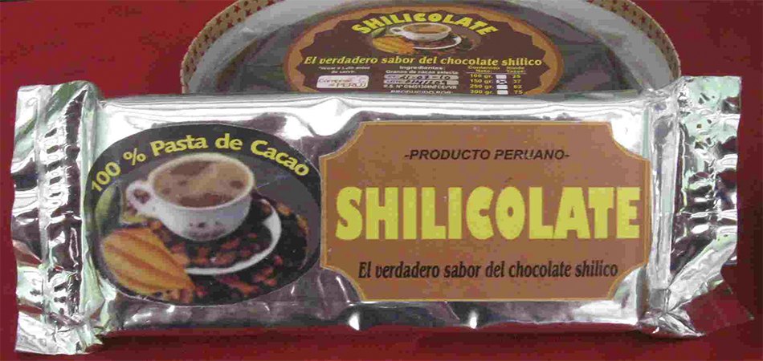
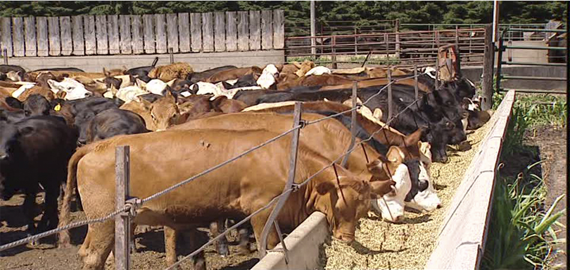
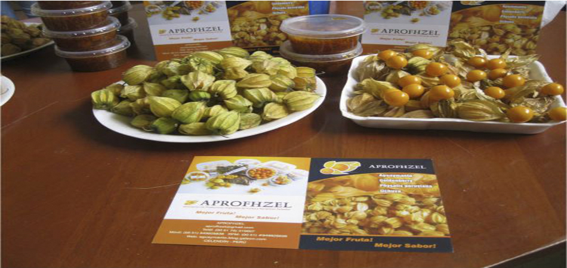

La Provincia de Celendín es una de las trece que conforman el Departamento de Cajamarca, bajo la administración del Gobierno Regional de Cajamarca, en el Perú.Limita al norte con la provincia de Chota, al este con la Región Amazonas, al sur con las provincias de San Marcos y Cajamarca, y al occidente con la provincia de Hualgayoc.
El Chocolate Celendino, es el chocolate más exquisito del norte del Perú, y para muchos entendidos es el mejor del Perú. Por las características de clima donde se cultivan así como su procesamiento. El chocolate de Celendín se procesa de manera artesanal, conservando todo su aroma y sabor ya perdidos en los productos comerciales de gran escala.
Cajamarca, departamento de la Sierra Norte del País, cuenta con una diversidad ecológica que ha permitido que en toda su extensión se instalen centros de cría de ganado lechero de razas Holstein y Brown Swiss en los valles, y cruces de éstas en las zonas más altas.
Los suelos más recomendados para el cultivo del aguaymanto son los que poseen estructura granular y una textura areno-arcillosa, preferiblemente que contengan altos contenidos de materia orgánica y un pH entre 5,66 y 6,988as. El aguaymanto registra buen comportamiento en las regiones que se ubican entre 1.800 y 3.600 msnm, con alta luminosidad, temperaturas promedio entre 13 y 18 grados celcios, precipitación anual de entre 1.000 y 2.000 mm y humedad relativa de 70 a 80 por ciento.
